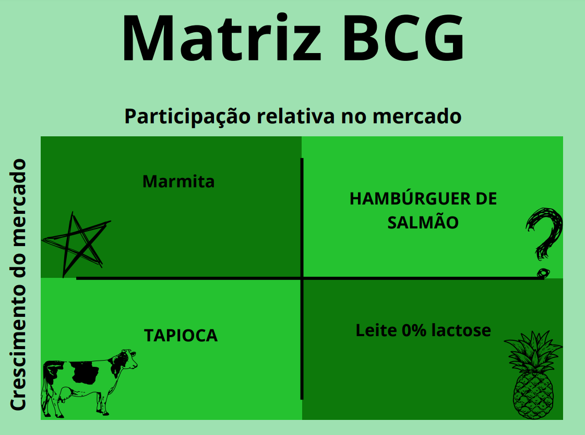
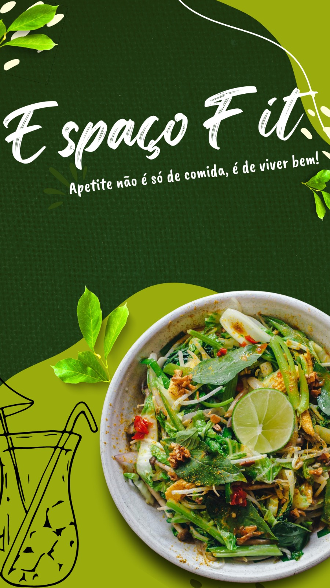

Identificação
A Espaço Fit foi fundada em 2015 por Ana Carolina do Carmo, Clara da Cruz e Helena Fonseca, como resultado de um projeto do curso Técnico em Administração. As sócias, que tinham uma vida corrida e consumiam fastfood diariamente, perceberam os impactos negativos dessa alimentação na saúde, especialmente após Helena sofrer problemas cardíacos graves. A partir dessa experiência, elas notaram que muitas pessoas enfrentam complicações de saúde devido à má alimentação e que os resíduos gerados por fastfood contribuem significativamente para a degradação ambiental.
Identificando uma mudança nos padrões alimentares dos brasileiros, com aumento no consumo de alimentos ultraprocessados, as sócias decidiram criar uma alternativa saudável e sustentável ao fastfood tradicional. Realizaram estudos de mercado e identificaram a demanda por fastfood saudável, levando a empresa a expandir o negócio. A Espaço Fit agora oferece refeições saudáveis, rápidas e sustentáveis em um local fixo, em outras regiões estratégicas e por delivery, harmonizando praticidade e saúde.

MISSÃO, VISÃO E VALORES
Missão
Aliar a praticidade dos alimentos de fastfood com a necessidade de uma alimentação saudável, oferecer um cardápio diferenciado como uma experiência no consumo dos alimentos saudáveis, além de priorizar a excelência no atendimento com a satisfação plena do cliente.
Visão
Ser a referência em alimentação saudável, oferecendo opções inovadoras e práticas de fastfood, contribuindo para a melhoria da saúde individual e coletiva, e para a preservação do meio ambiente.
Valores
Saudabilidade, Inovação, Praticidade, Colaboração, Transparência Responsabilidade e Qualidade.
Analise SWOT

Forças - Strengths
Inovação: combinação da praticidade dos alimentos de fastfood com a necessidade de uma alimentação saudável e sustentável, oferecendo opções inovadoras e práticas.
Sustentabilidade: prioridade na qualidade e a saúde dos alimentos, garantindo que as opções oferecidas sejam saudáveis e seguras para os clientes, e implementa práticas que minimizam o impacto ambiental.
Colaboração: ambiente de trabalho colaborativo, onde todos sejam motivados e comprometidos com os objetivos da empresa.
Transparência: processos e práticas transparentes, garantindo a confiança dos clientes e colaboradores.
Fraquezas - Weaknesses
Limitação de recursos: recursos financeiros, humanos ou tecnológicos que podem afetar a capacidade de expansão e inovação.
Gestão de estoque: com a inovação, a Espaço Fit pode precisar melhorar a gestão de estoque para garantir a disponibilidade de produtos frescos,na data de validade e na de qualidade adequadas.
Oportunidades - Opportunities
Expansão geográfica: a empresa tem a possibilidade de expandir seu negócio para outras regiões estratégicas, atendendo às necessidades de pessoas em termos de rapidez e qualidade alimentar.
Novas tecnologias: A empresa pode aproveitar novas tecnologias para melhorar a eficiência e a eficácia dos processos internos.
Parcerias estratégicas: estabelecer parcerias estratégicas com empresas que compartilham seus valores e objetivos.
Marketing digital: investir para aumentar a visibilidade e atração de clientes.
Inovação em Produtos: para manter a liderança no mercado.
Ameças - Threats
Concorrência: outras empresas que oferecem opções de alimentação saudável e sustentável.
Mudanças na legislação: o que pode afetar a indústria alimentícia.
Matriz BCG
A Matriz BCG foi outra ferramenta usada para a tomada de decisões estratégicas mais adequadas sobre cada produto dentro da empresa. Baseada em volume, participação de mercado e crescimento de mercado, a matriz foi composta por quatro elementos, a saber:
Estrela: Marmita congelada - alta participação de mercado e alta possibilidade de crescimento.
Vaca leiteira:
Tapioca - alta participação e baixo crescimento de mercado.
Abacaxi:
Leite 0 % Lactose - baixa participação no mercado e baixa taxa de crescimento.
Ponto de interrogação:
Hambúrguer de Salmão – crescimento do mercado é alto e a participação ainda é baixa.
Abaixo, uma demonstração de como essa matriz foi usada na Espaço Fit.

Conclusão

O presente estudo demonstrou que a empresa, com a ajuda da consultoria, desenvolveu uma abordagem integral para solucionar a problemática e alcançar o sucesso. A abordagem foi caracterizada pela ampliação da visão estratégica dos gestores, permitindo que eles tomassem decisões mais informadas e eficazes dentro da organização.
A equipe desenvolveu processos administrativos cuidadosamente, começando pela criação de informações institucionais essenciais, incluindo a história da empresa, seus objetivos específicos, missão, visão e valores. Além disso, foram estabelecidas práticas claras para fiscalização, organização e estruturação da empresa.
A implementação dessas medidas foi bem-sucedida, utilizando a ferramenta gestora de Planejar, Fazer, Checar e Agir. Com essa abordagem, a empresa foi capaz de elencar seu negócio e atrair um grande número de clientes, estabelecendo uma conexão profunda com eles. Além disso, a empresa reuniu as informações essenciais para conhecimento profundo da empresa e seu desenvolvimento, o que foi fundamental para a expansão e inovação do negócio.
Em resumo, o projeto integrador demonstrou o compromisso da empresa em reunir informações essenciais e aplicar processos administrativos robustos, impulsionando seu desenvolvimento e inovação. Este estudo contribui para a compreensão da importância da gestão eficaz e da estratégia empresarial para o sucesso da organização.
Junte-se a Nós
Baixe nosso relatório de sustentabilidade ou participe de nossa missão.
Nossa Localização